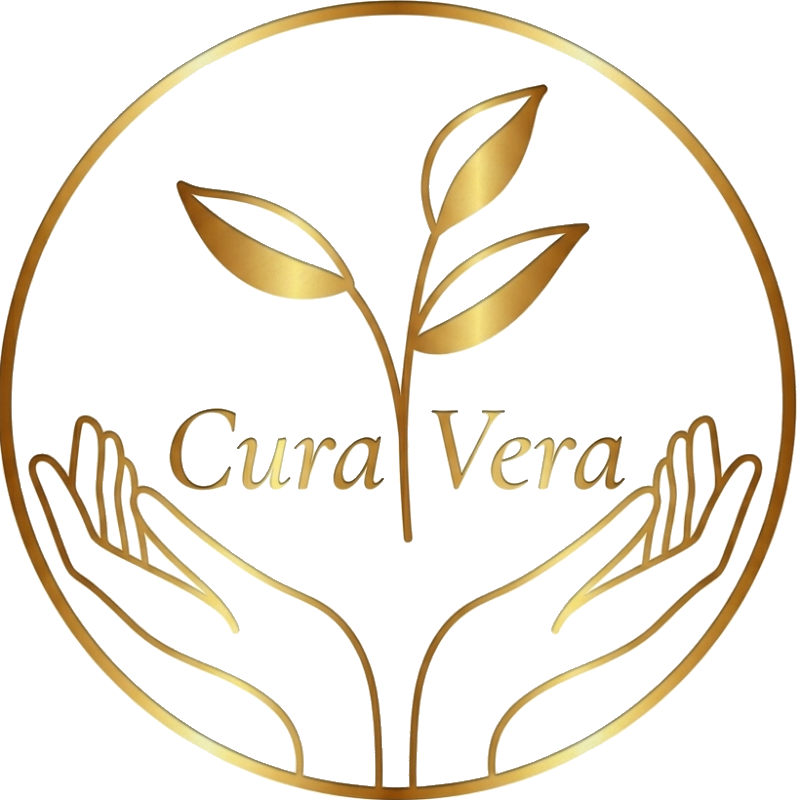

01
Individuel terapi
Et fortroligt rum til at udforske det, der fylder — angst, livsovergange, tilknytningsmønstre, eksistentielle spørgsmål eller længslen efter mere kontakt med dig selv.
60 min · 450 dkk
Jeg tilbyder individuel terapi, parterapi og gruppeforløb i Sønderborg, Broager og online.
Jeg tilbyder individuelle forløb, parterapi og gruppeprocesser. Mit arbejde udspringer af en dyb interesse for menneskers indre liv, relationer og det, der ofte ligger gemt under overfladen. Jeg skaber rum for nærvær, ærlighed og udvikling — et sted hvor det bliver muligt at møde sig selv og hinanden med større bevidsthed og autenticitet.
Gennem mange år har jeg været på min egen selvudviklingsrejse og har løbende videreuddannet mig inden for terapi og personlig udvikling. Aktuelt er jeg i den afsluttende del af min 4-årige uddannelse til Psykoterapeut MPF.
Udover at være selvstændig psykoterapeut, er jeg ansat som jurist i familieretshuset, hvor jeg arbejder med brudte familier og deres udfordringer. Jeg har mere end 20 års erfaring med mennesker i komplekse og sårbare livssituationer — en erfaring, der har givet mig en dyb forståelse for relationelle dynamikker, konflikt, ansvar og forandring.
Et fortroligt rum til at udforske det, der fylder — angst, livsovergange, tilknytningsmønstre, eksistentielle spørgsmål eller længslen efter mere kontakt med dig selv.
For par der ønsker at genfinde nærvær, forstå deres dynamikker og bevæge sig sammen gennem konflikt, savn eller forandring. Med fokus på relation, kommunikation og intimitet.
Samtaler om krop, lyst, intimitet og seksualitet — alene eller som par. Et trygt sted at tale ærligt om det, der ofte er svært at sætte ord på.
Betaling foregår via MobilePay eller bankoverførsel efter sessionen. Afbud bedes givet senest 24 timer før.
